Lamine Yamal
Delantero
Joven promesa española salida de la masía, talento ofensivo con gran habilidad, velocidad y proyección dentro del equipo.
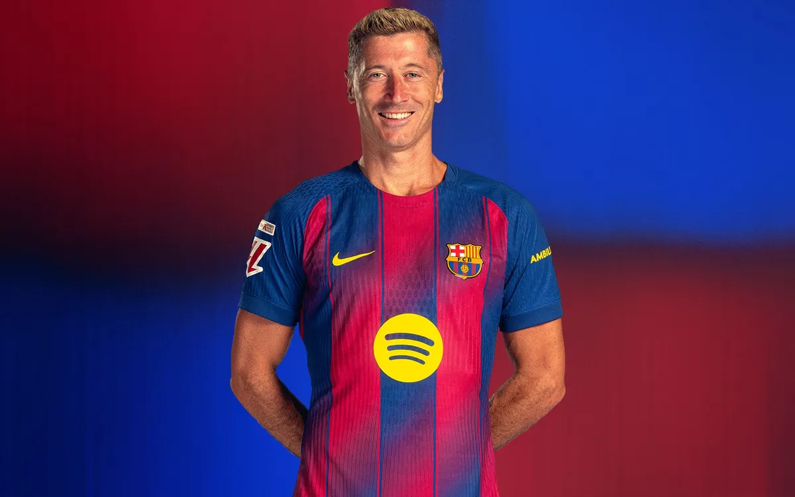
Lewandowski
Delantero
Delantero polaco, conocido por su capacidad goleadora y su trabajo en el área.
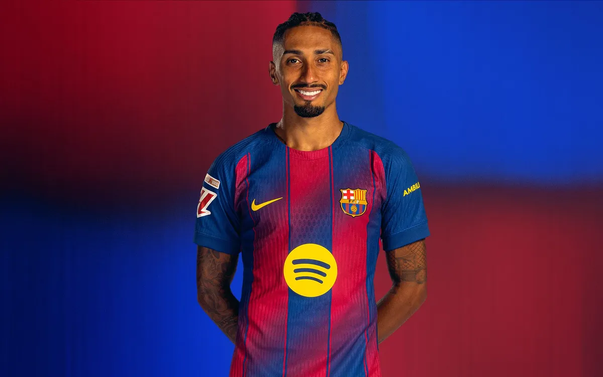
Raphinha
Delantero
Delantero brasileño, conocido por su esfuerzo y su capacidad goleadora.
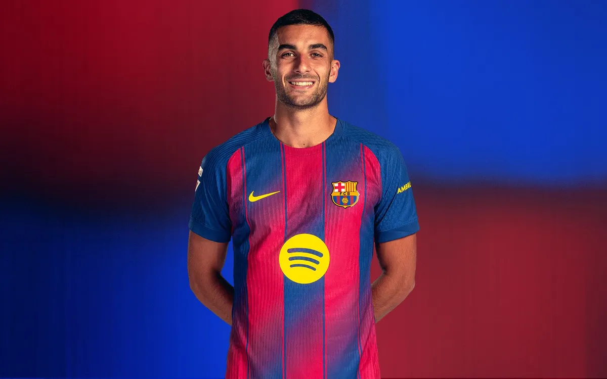
Ferran Torres
Delantero
Delantero español, conocido por su versatilidad y capacidad para marcar goles.
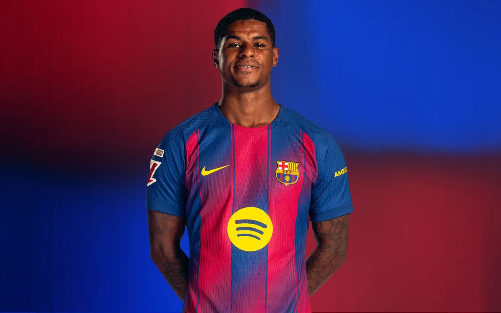
Marcus Rashford
Delantero
Delantero inglés, conocido por su velocidad y capacidad para marcar goles.
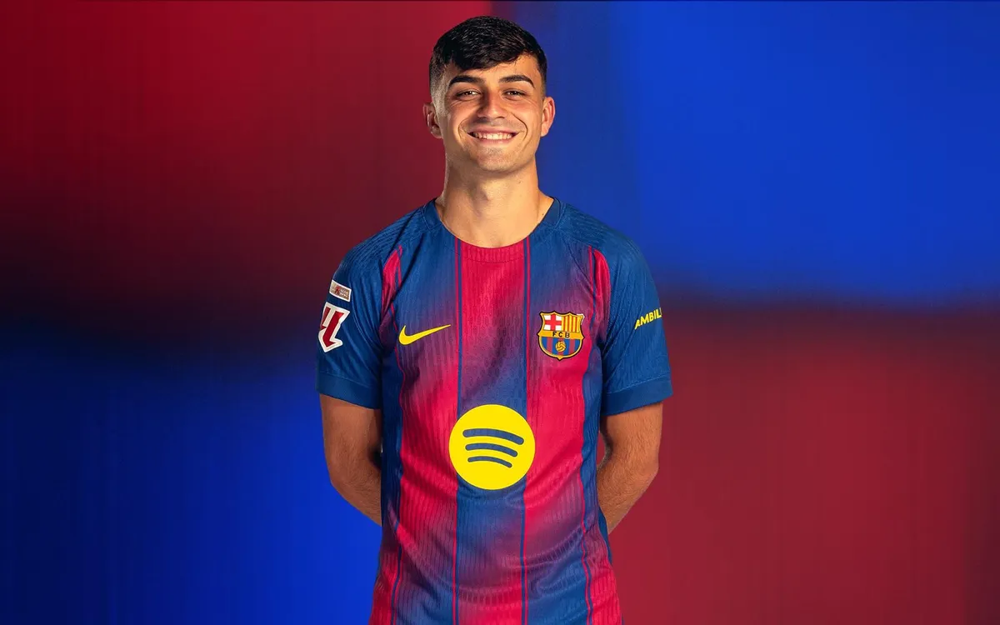
Pedri
Mediocampista
Centrocampista creativo con excelente visión de juego, control del balón y capacidad para generar oportunidades.
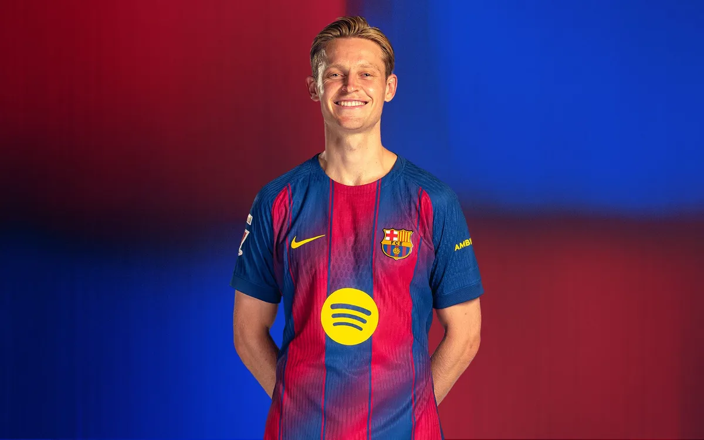
Frenkie de Jong
Mediocampista
Centrocampista elegante con gran manejo del balón y capacidad para organizar el juego desde el medio campo.
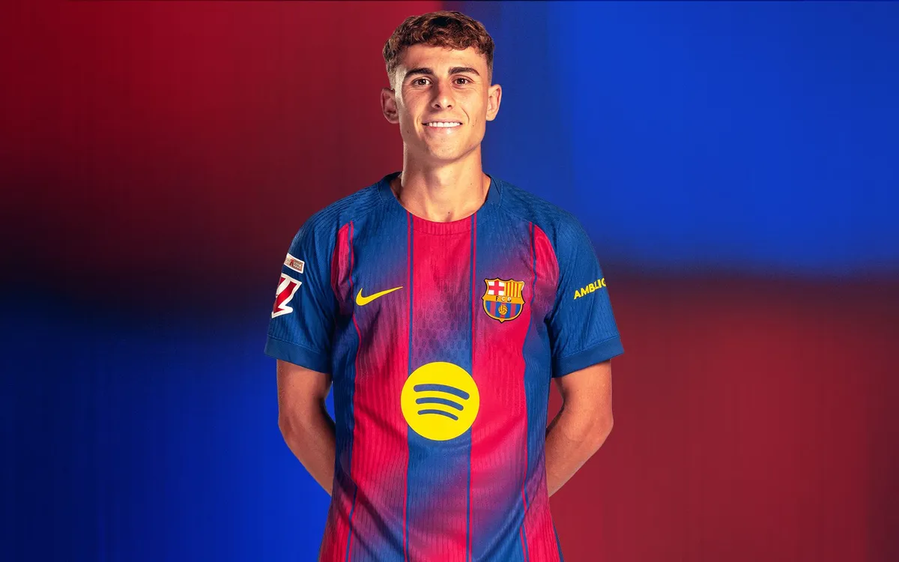
Fermin Lopez
Mediocampista
Centrocampista español, conocido por su capacidad para crear oportunidades y su visión de juego.
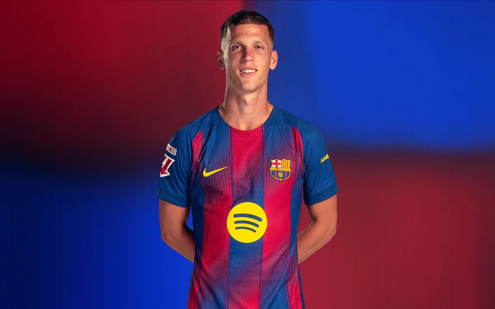
Dani Olmo
Mediocampista
Centrocampista español, conocido por su versatilidad y capacidad para crear oportunidades.
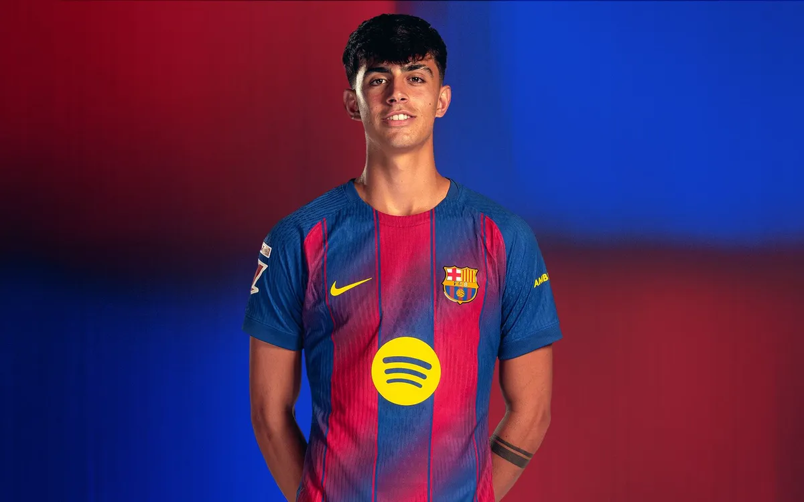
Marc Bernal
Mediocampista
Centrocampista español, recien llegado al primer equipo salido de la cantera.
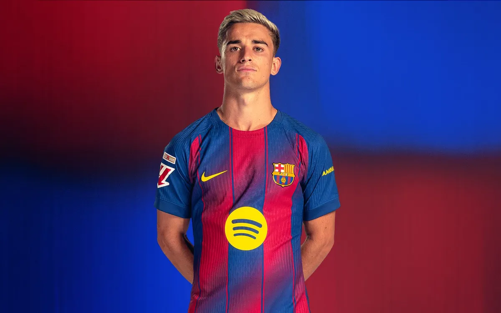
Gavi
Mediocampista
Mediocampista joven con mucha intensidad, entrega y carácter, clave en la presión y recuperación del balón.
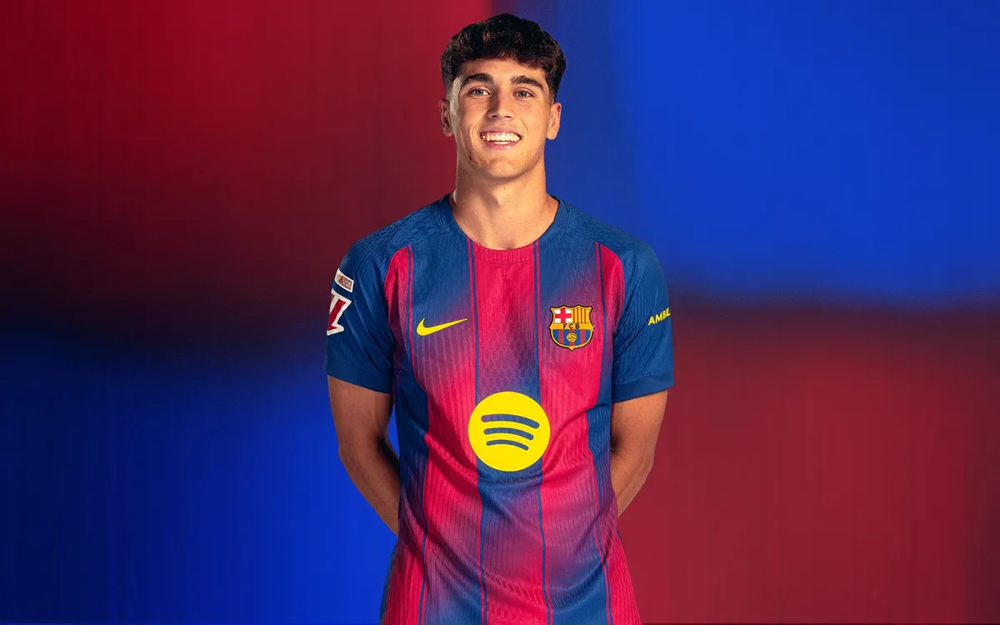
Pau Cubarsí
Defensa
Defensa español, conocido por su capacidad del pase largo y su liderazgo en el área.
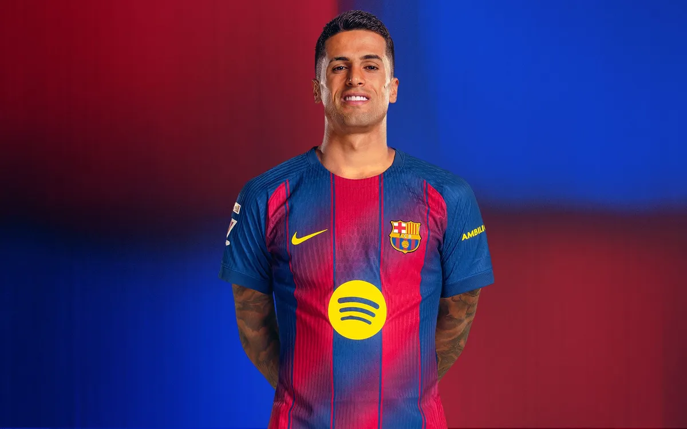
Joao Cancelo
Defensa
Defensa portugués, conocido por su capacidad técnica y habilidad con el balón.
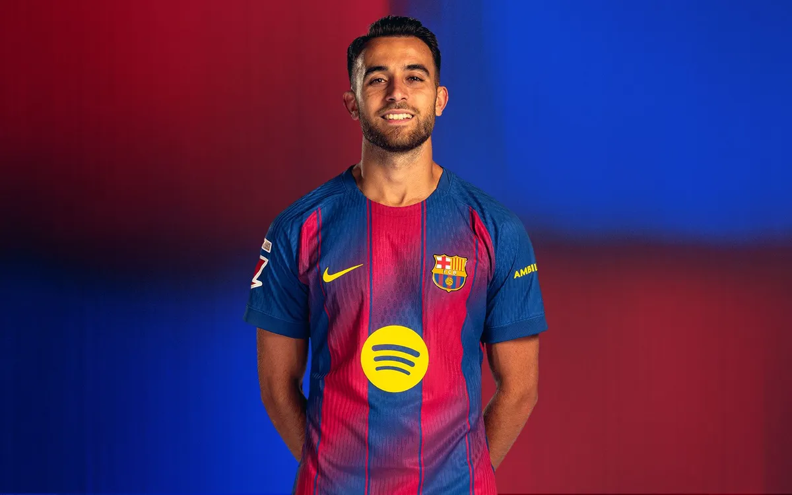
Eric García
Defensa
Defensa español, conocido por su agilidad, polivalecnia y reflejos defensivos.
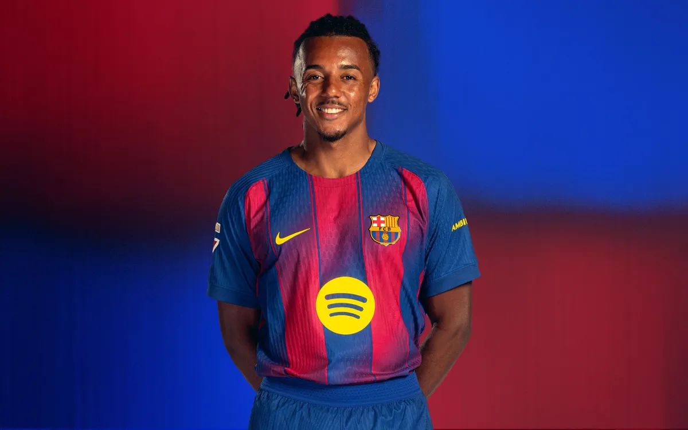
Jules Koundé
Defensa
Defensa francés, conocido por su capacidad para anticipar jugadas y su solidez defensiva.
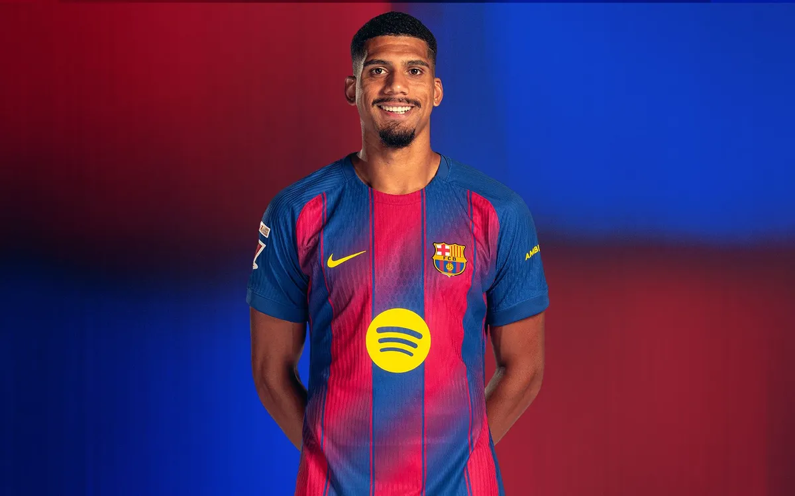
Ronald Araujo
Defensa
Defensa central fuerte, rápido y seguro, fundamental para mantener la solidez defensiva del equipo.
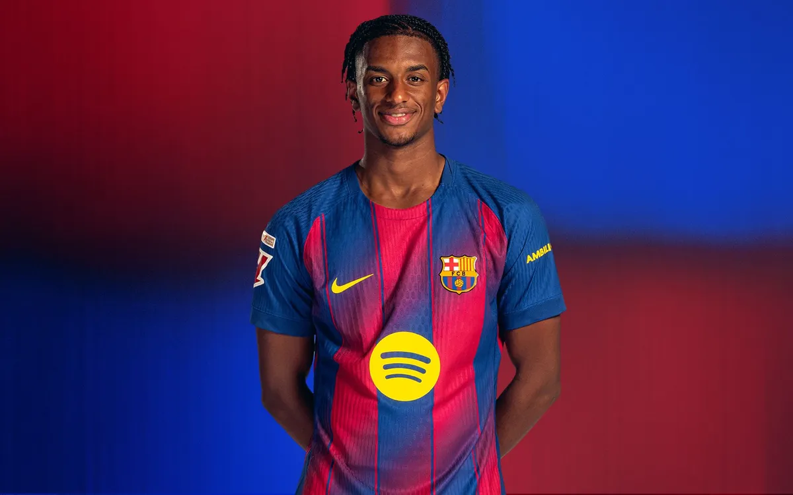
Alejandro Balde
Defensa
Defensa español, conocido por su versatilidad al ataque y su velocidad.